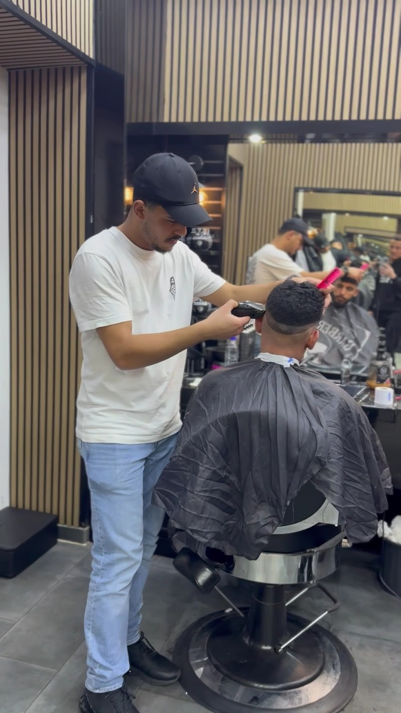
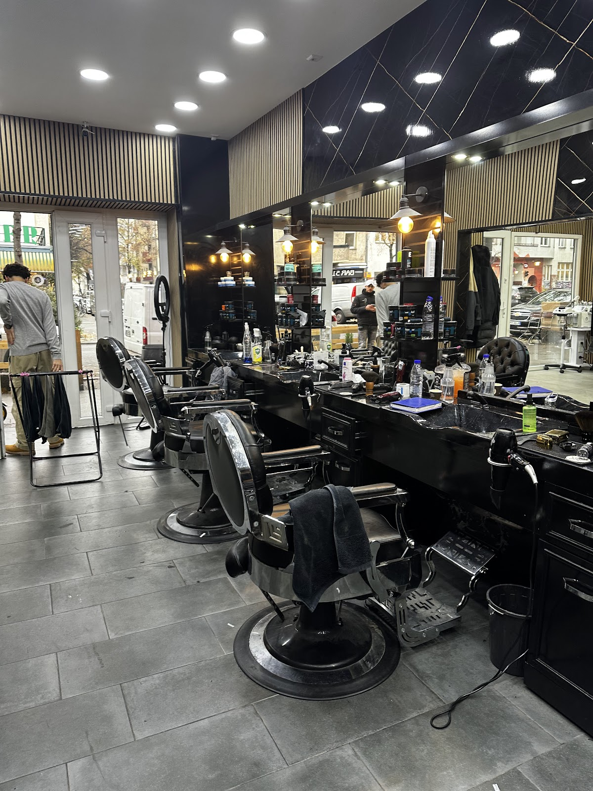
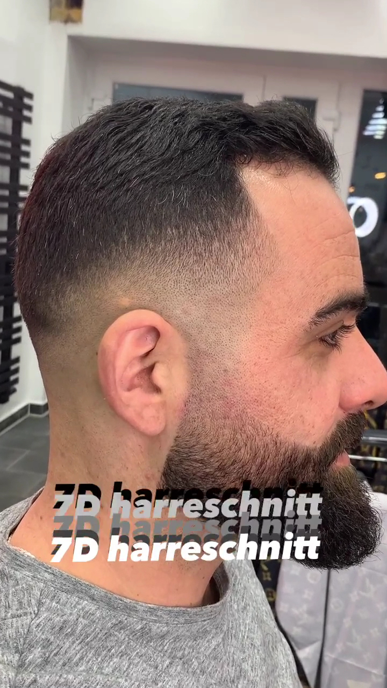
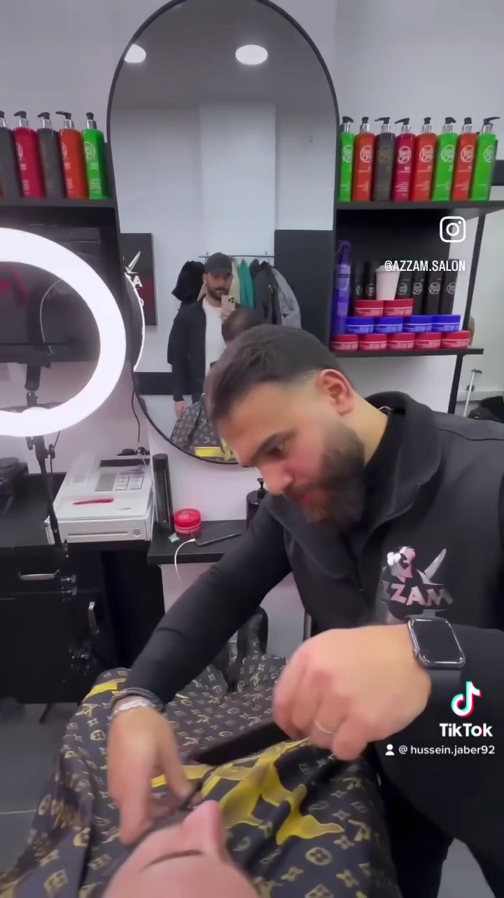

Schwarz, Gold und ein Laden, der nicht stillsteht: Haarschnitt, Bart und Pflege auf der Sonnenallee — sechs Tage die Woche, bis spät in den Abend.أسودٌ وذهب، وصالونٌ لا يهدأ: قصّة شعرٍ ولحيةٌ وعناية على شارع العرب — ستة أيامٍ في الأسبوع حتى ساعةٍ متأخّرة من المساء.
Abends leuchtet der Name zweimal über dem schwarzen Schaufenster — einmal in lateinischen, einmal in arabischen Buchstaben. Drinnen: Marmor, warmes Licht, eine Reihe Ledersessel und Klingen, die den ganzen Tag zu tun haben. Azzam ist kein Durchlauf-Barbier, sondern ein Salon, in dem man sich Zeit für den Kopf nimmt, der ihn trägt.في المساء يُضيء الاسم مرّتين فوق الواجهة السوداء — مرّةً بالحروف اللاتينية ومرّةً بالعربية. في الداخل: رخامٌ وضوءٌ دافئ وصفُّ كراسٍ جلدية وشفراتٌ لا تهدأ طوال اليوم. عزام ليس حلاقاً عابراً، بل صالونٌ يأخذ وقته مع كلّ رأسٍ يجلس على كرسيّه.
Vom klassischen Schnitt über Bartkontur bis Hydrafacial, Laser und Hijama — was am Schaufenster steht, wird drinnen ernst genommen. Und weil Neukölln spät lebt, steht die Tür bis 22 Uhr offen: nach der Arbeit, nach dem Essen, vor dem Wochenende.من القصّة الكلاسيكية إلى تحديد اللحية، ومن الهيدرافيشل إلى الليزر والحجامة — ما هو مكتوبٌ على الواجهة يُؤخذ في الداخل على محمل الجدّ. ولأنّ نويكولن تسهر، يبقى الباب مفتوحاً حتى العاشرة: بعد الدوام، بعد العشاء، وقبل نهاية الأسبوع.

Alles, was auf der schwarzen Fassade steht — von der Schere bis zur Schröpftherapie.كلّ ما هو مكتوبٌ على الواجهة السوداء — من المقصّ إلى الحجامة.
Klassisch, modern oder Fade — sauber ausgeführt, mit Blick für Details und einer Kontur, die hält.كلاسيكية أو عصرية أو متدرّجة — تنفيذٌ نظيف، وعينٌ على التفاصيل، وحدودٌ تبقى مرتّبة.
Rasur, Bartkontur und Pflege — die Linie, an der man einen guten Barbier erkennt.حلاقةٌ وتحديدٌ وعناية — الخطُّ الذي يُعرَف منه الحلاق الجيّد.
Farbe und Tönung für Kopf und Bart — natürlich abgestimmt statt einfach dunkel.صبغٌ وتدريجُ لونٍ للرأس واللحية — بدرجةٍ طبيعية مدروسة لا سواداً صرفاً.
Tiefenreinigung fürs Gesicht — frische Haut nach langen Berliner Wochen.تنظيفٌ عميق للوجه — بشرةٌ منتعشة بعد أسابيع برلين الطويلة.
Dauerhafte Haarentfernung mit Laser — diskret und professionell im Salon.إزالةٌ دائمة للشعر بالليزر — بخصوصيةٍ واحترافٍ داخل الصالون.
Traditionelles Schröpfen nach Termin — eine Praxis, die viele Stammgäste genau hier suchen.الحجامة التقليدية بموعدٍ مسبق — عادةٌ يقصدنا كثيرون من أجلها.
Auch am Haus: Behandlung bei kreisrundem Haarausfall (علاج الثعلبة). Preise im Salon — fragen Sie am Stuhl.وعندنا أيضاً: علاج الثعلبة كما هو معلَنٌ على الواجهة. الأسعار في الصالون — اسألوا عند الكرسي.
Der halbe Kiez kommt nach Feierabend: ab 9:30 Uhr morgens bis 22 Uhr abends stehen die Stühle bereit — ohne Hektik, auch spät noch mit voller Sorgfalt.نصفُ الحيّ يأتي بعد الدوام: من التاسعة والنصف صباحاً حتى العاشرة ليلاً الكراسي جاهزة — بلا استعجال، وبعنايةٍ كاملة حتى في ساعات المساء الأخيرة.



"I visited Azzam Salon today and I'm absolutely thrilled! The team is incredibly friendly, the atmosphere is pleasant, and I immediately felt welcome. My haircut was done exactly as I wanted — clean, precise, and with great attention to detail."
53 Google-Bewertungenتقييماً على غوغل
| Montagالاثنين | 9:30–22:00 |
| Dienstagالثلاثاء | 9:30–22:00 |
| Mittwochالأربعاء | 9:30–22:00 |
| Donnerstagالخميس | 9:30–22:00 |
| Freitagالجمعة | 9:30–22:00 |
| Samstagالسبت | 9:30–22:00 |
| Sonntagالأحد | geschlossenمغلق |
Sonnenallee 52, 12045 Berlin
Einfach vorbeikommen — oder den Termin kurz per WhatsApp sichern, dann wartet der Stuhl schon.تفضّلوا مباشرةً — أو احجزوا موعدكم برسالة واتساب قصيرة، فيكون الكرسي بانتظاركم.
WhatsApp schreibenراسلونا واتساب +49 179 1041692 Route auf Google Mapsالطريق على خرائط غوغل